Věra Novotná, rozená Slavíková
1942 – 2026
Život
Cílevědomá žena a dáma
Věra Slavíková se narodila v roce 1942 v Brně, do rodiny cukráře Jana a pomocnice Františky. V roce 1944 přibyla do rodiny setra Jana. Válečné a poválečné období bylo pro rodinu složité, otec byl totálně nasazen a po komunistickém převratu v roce 1948 zbaven živnosti. Věra chodila do mateřské školy k řádovým sestrám voršilkám na Orlí ulici, později na základní školu v centru města. Společně se sestrou si jako děti užívaly relativně klidný městský život. To se náhle změnilo v polovině 50. let 20.století, kdy ovdověla babička Františka Wellnerová žijící v domku v Líšni a reálně hrozilo, že místní národní výbor k osaměle ženě žijící v rodinném domku nuceně dosadí další nájemníky (v té době to byla běžná praxe, podobně „dosídlené“ nájemnice v okolních domech žily až do konce 70. let 20.století). Rázná matka Františka rozhodla, že dcery Věra i Jana se k babičce nastěhují, aby se zabránilo nucenému umístění cizích nájemníků. Obě děvčata pak rázem změnila bydliště a každý den dojížděla za školními povinnostmi tramvají kolem Stránské skály do Brna, což v tehdejší době pro sotva -náctileté sestry rozhodně nebylo jednoduché. V roce 1957 Věra začala studovat Střední zdravotnickou školu v Jaselské ulici a tu v roce 1961 úspěšně dokončila. Záhy nastoupila jako zdravotní sestra do Vojenské nemocnice v Brně. Zanedlouho poznala v Líšni Milana Novotného, absolventa fakulty stavební VUT a v roce 1963 se za něj provdala. V roce 1965 se jim narodil syn Michal. Po krátké mateřské dovolené (v té době 22 týdnů, s neplaceným volnem maximálně rok) nastoupila zpět na místo zdravotní sestry. Brzy ale poznala, že náročná práce sestry, směny a víkendové služby se s péčí o dítě příliš neslučují. Otec Jan jí nabídnul práci ve sběrně surovin v tehdejší Gottwaldově ulici (nyní Cejl). Byla to práce fyzicky nesmírně namáhavá, v nečistém prostředí, zato dobře placená a s pevnou pracovní dobou. Ve sběrně vydržela až do roku 1971, kdy se jí narodil druhý syn Marek. Po druhé mateřské dovolené se jí naskytla příležitost uplatnit původní vzdělání zdravotní sestry a začala pracovat na pečovatelské službě Brno 1. Práce ji bavila, oproti předchozím zaměstnáním šlo o výraznou změnu k lepšímu. Není divu, že s pečovatelskou službou spojila téměř 20 let profesního života až do odchodu na odpočinek. V důchodu se Věra ráda starala o zahrádku, ráda vařila i pekla. Nepřestala se stýkat s kolegyněmi z pečovatelské služby a spolužačkami ze zdravotní školy. Pomáhala snachám s vnoučaty, pevnou rukou vedla domácnost. Pečovala o manžela, jak se zhoršoval jeho zdravotní stav. Zdraví nakonec zradilo i ji, poslední roky života strávila v péči domova seniorů.Záliby a zajímavosti
Co ji bavilo
Milovala události z „velkého“ světa. Dokázala hodiny sledovat přímé přenosy z královských svateb či pohřbů, každý rok strávila dva týdny sledováním všech etap Tour de France. Tyto události také dokázala velmi vtipně komentovat, smysl pro sarkastický až černý humor si zachovala až do posledních dnů. Zajímala se o módu, ráda se hezky oblékala. Věci brala tak, jak přicházely a neztrácela nadhled. Nikdy si na nic nestěžovala.
Fotografie
Ze života
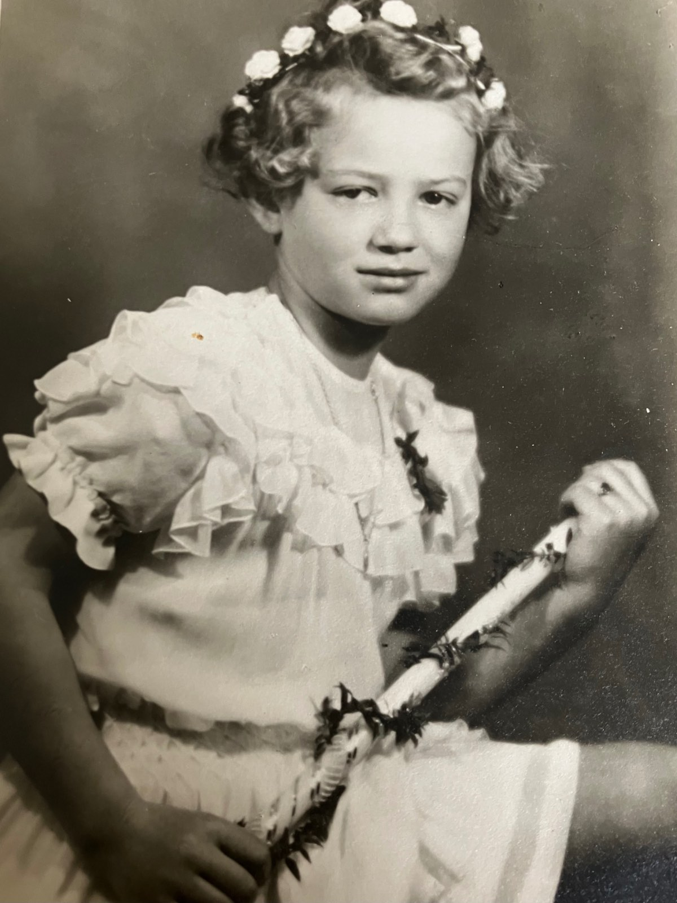
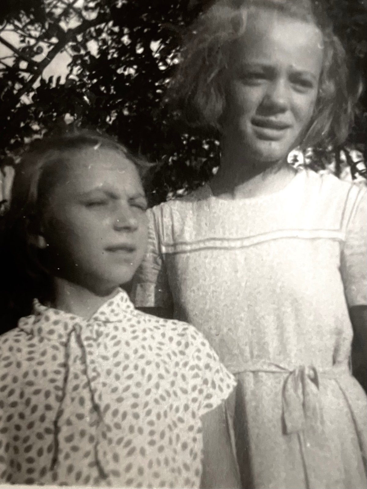
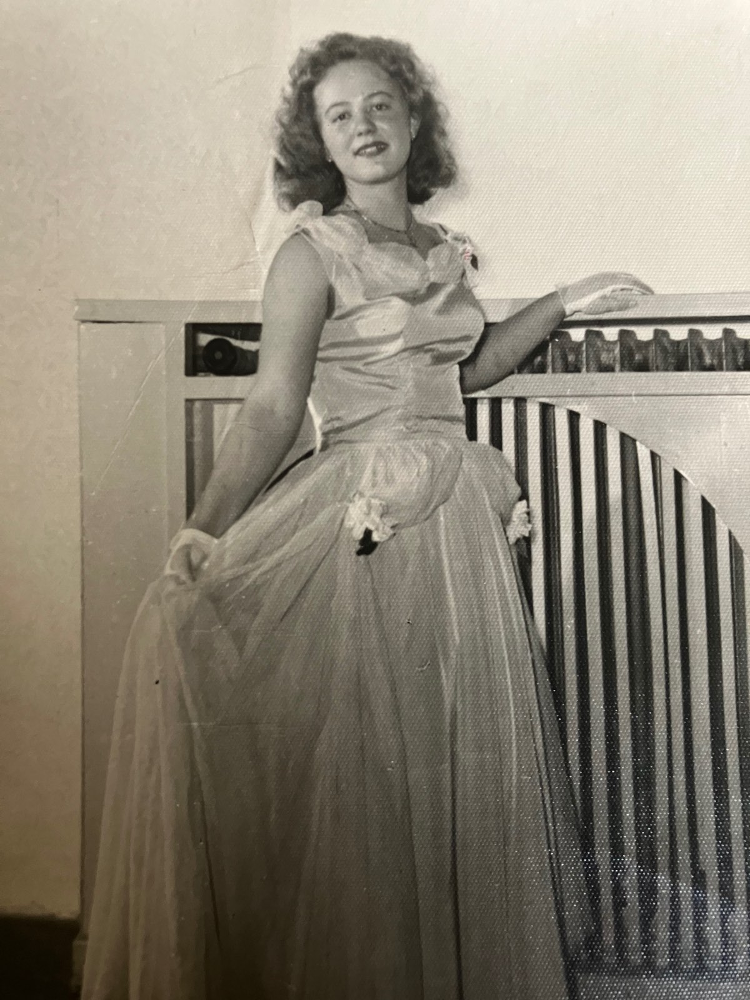
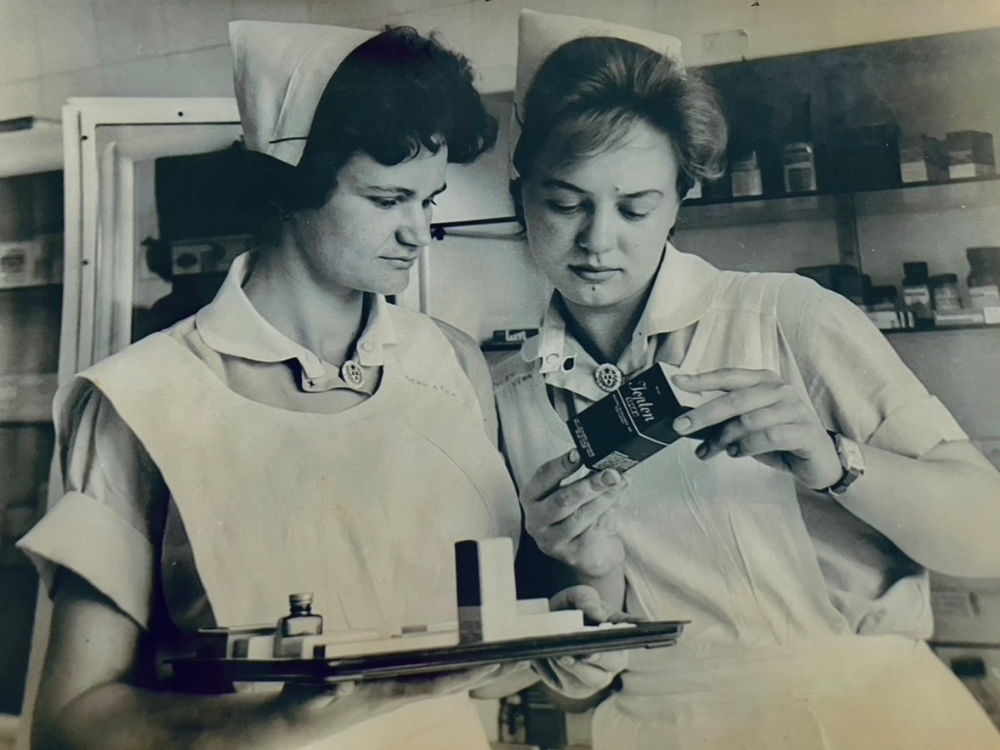
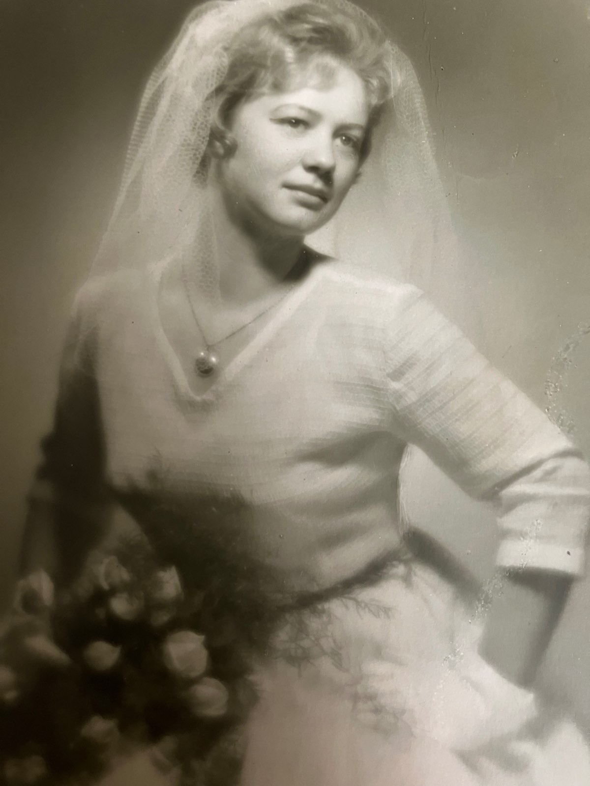
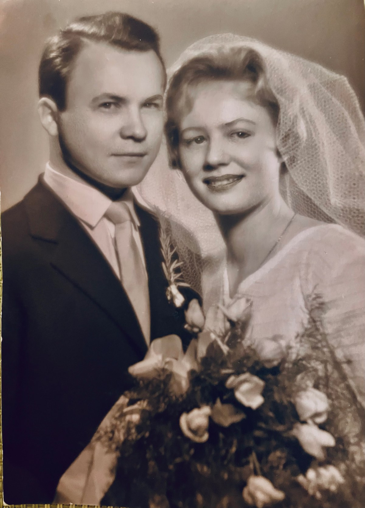
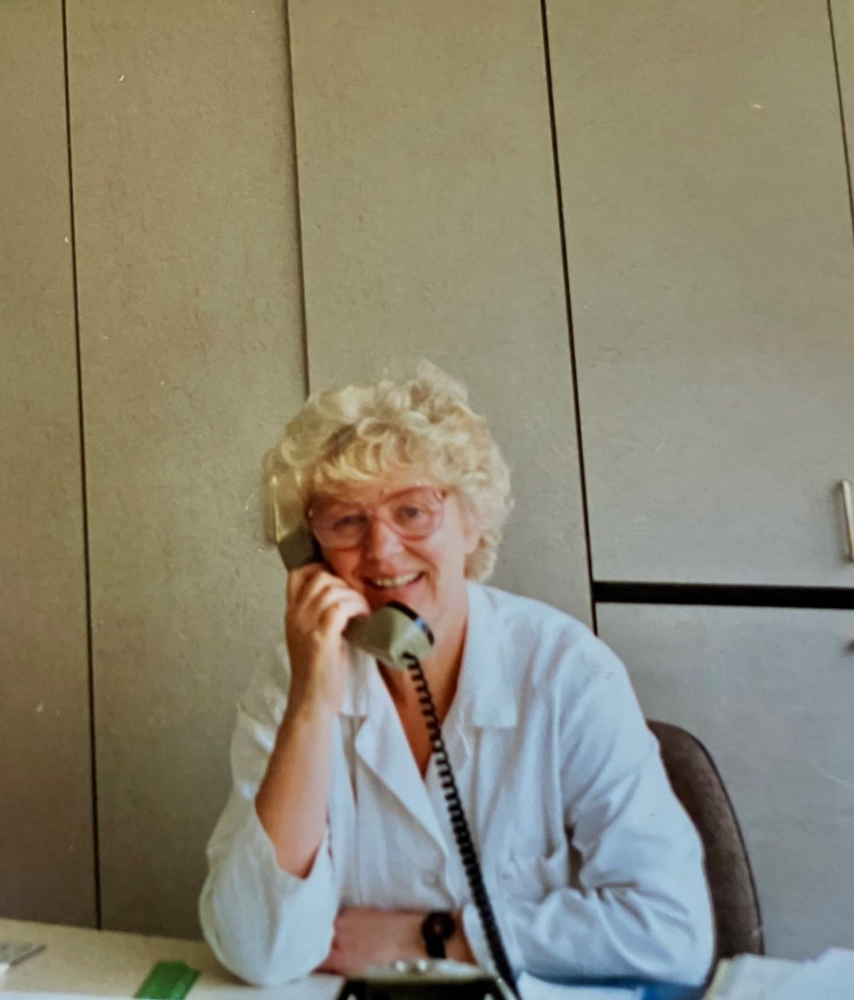
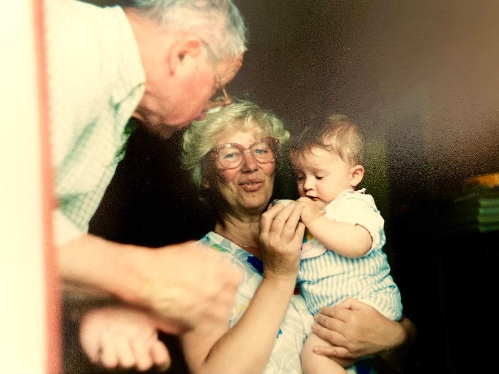
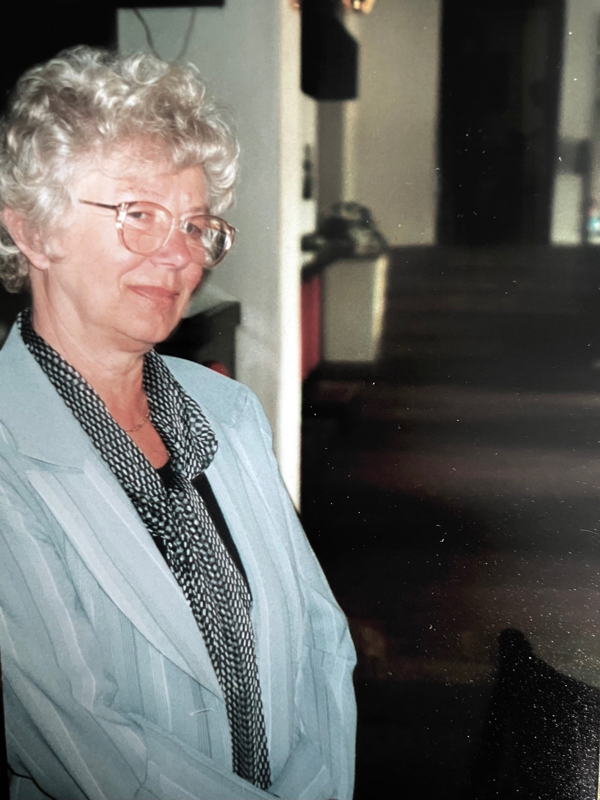
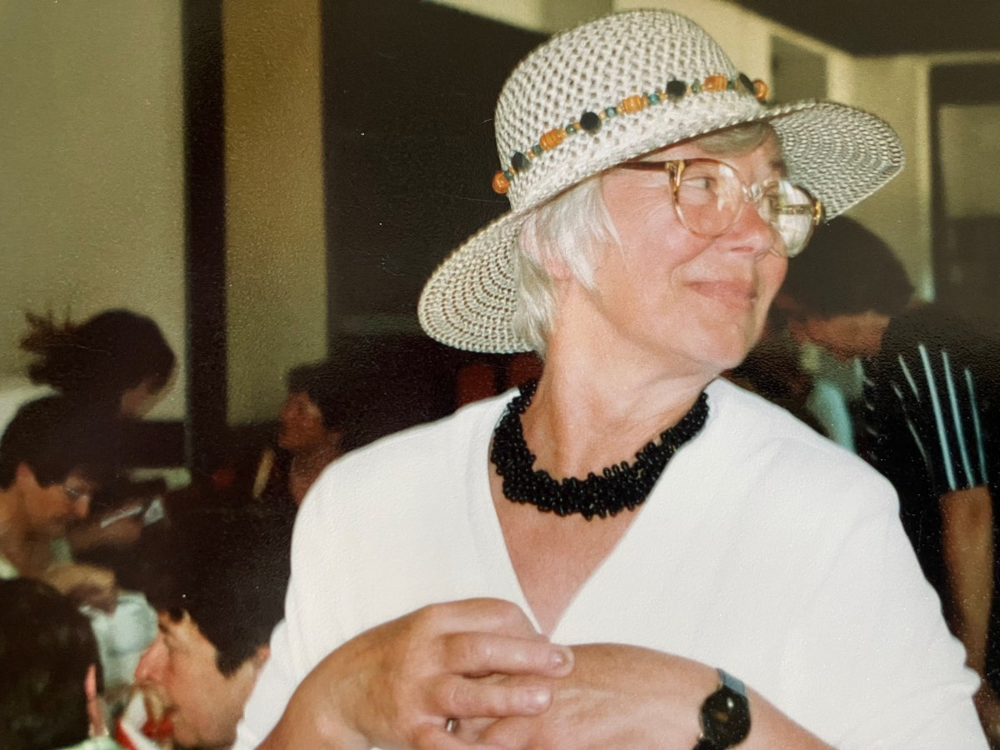
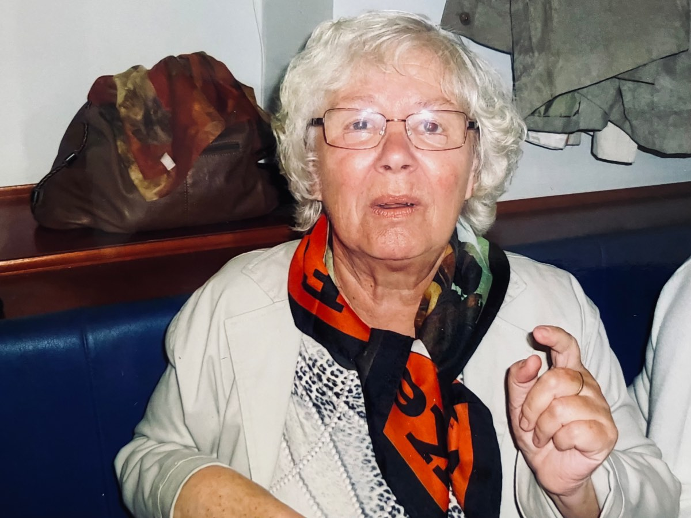